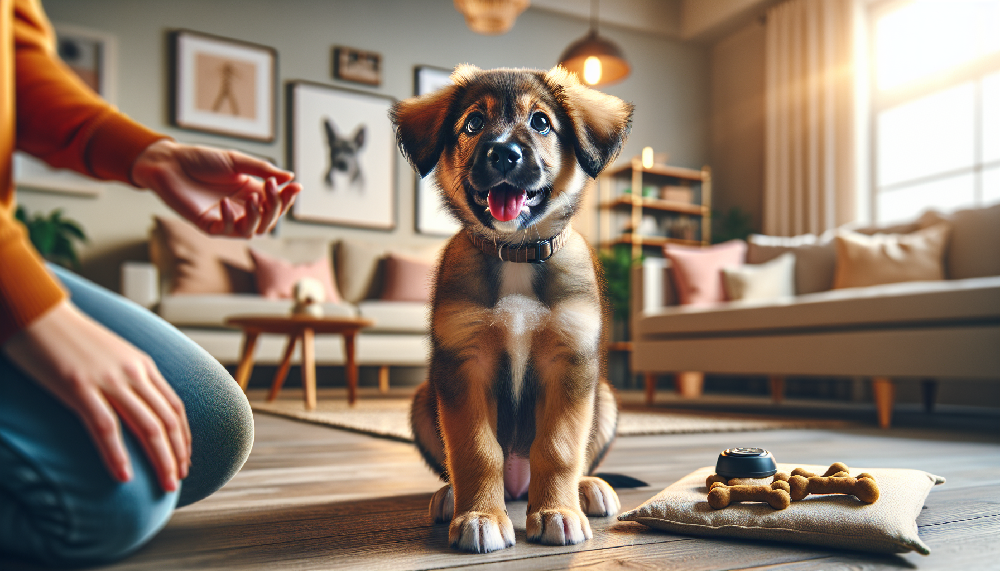

The first six months of a dog’s life are full of rapid learning, social development, and habit-building. Whether you are raising a young puppy or helping a newly adopted rescue settle into your home, this stage is the perfect time to teach the practical skills that make everyday life easier and safer. The good news is that you do not need to teach dozens of tricks right away. A small set of reliable core cues can dramatically improve communication, reduce stress, and help your dog navigate the world with confidence.
When people ask what commands a dog should know by 6 months, the answer is not about showing off obedience. It is about building a foundation. The right commands help prevent unsafe situations, support polite behavior around people and other dogs, and make vet visits, walks, and family routines smoother. Science-backed dog training also tells us that dogs learn best through repetition, consistency, and positive reinforcement. In other words, reward what you want to see more of.
Below are five essential commands every dog should know by 6 months, along with practical tips for teaching them in a way that is effective, humane, and realistic for busy dog owners.
Dogs are always learning, but early development is especially important. During puppyhood and early adolescence, dogs form associations quickly. They are learning what earns rewards, what feels safe, and how to respond to the people around them. Rescue adopters may not know a dog’s full history, but the same principle applies: the earlier you establish predictable communication and positive routines, the faster your dog can adapt.
Training during this period should focus on short, frequent sessions. Aim for one to five minutes at a time, several times a day. This keeps learning fun and prevents frustration. Use food rewards, toys, praise, and real-life rewards like going outside or greeting a friend. Keep your cues clear, your expectations realistic, and your criteria gradual. Success is built one small repetition at a time.
If you teach only one early cue, many trainers start with sit because it is simple, practical, and easy to reward. Sit helps your dog pause and focus instead of jumping, darting, or becoming overly excited. It can be used before meals, at doorways, when greeting guests, and during leash clipping.
To teach sit, hold a treat near your dog’s nose and slowly move it up and slightly back. As your dog follows the treat, the rear naturally lowers to the ground. The moment your dog sits, mark the behavior with a cheerful “yes” or a click, then reward. Once your dog is offering the behavior smoothly, add the verbal cue “sit” just before the motion.
Keep sessions upbeat and avoid pushing on your dog’s body. Luring and rewarding is clearer and more comfortable. Over time, phase out the visible lure and reward from your other hand or pocket so your dog responds to the cue, not just the sight of food.
Why it matters: Sit teaches impulse control and gives you an easy alternative to jumping or rushing forward. It is not just obedience; it is a practical life skill.
A reliable come is one of the most important commands any dog can learn. If your dog slips a leash, heads toward a street, or gets distracted at the park, recall can be the difference between a close call and a disaster. Because recall is so valuable, it should always predict something good.
Start indoors or in a fenced area. Say your dog’s name followed by “come” in a happy, inviting voice. Then move backward a few steps. Most dogs will naturally follow. As soon as they reach you, reward generously with high-value treats, praise, or a favorite toy. Make coming to you feel like winning the lottery.
Never call your dog to punish them, end play abruptly, or do something they strongly dislike without balancing it with rewards. If “come” always means fun is over, your dog will learn to avoid it. Instead, practice many times a day for small rewards, and occasionally release your dog back to play so recall does not always end the good part.
Why it matters: Recall is a core safety behavior. It also builds trust and gives your dog more freedom as reliability improves.
Dogs explore with their mouths, which makes leave it incredibly useful. From dropped food and chicken bones on the sidewalk to socks, medications, and household clutter, this cue can help prevent dangerous mistakes. It teaches your dog that ignoring something tempting leads to a better reward.
Begin with a treat in your closed fist. Present your fist and let your dog sniff, lick, or paw. The moment your dog backs off even slightly, mark and reward with a different treat from your other hand. Repeat until your dog quickly disengages when they see the closed fist. Then add the cue “leave it.” Gradually progress to an open hand, a treat on the floor, and eventually real-world items, always controlling the setup so your dog can succeed.
The goal is not to create frustration. It is to teach thoughtful disengagement. This is a strong example of positive reinforcement in dog training: your dog learns that making a better choice pays off.
Why it matters: Leave it protects your dog from unsafe objects and helps reduce scavenging, grabbing, and impulsive behavior.
Down is more than a cute pose. It encourages calmness and can be incredibly useful in daily life, especially in homes with kids, guests, or multiple pets. A dog who can settle into a down is often easier to manage during meals, at outdoor cafes, in training classes, or while waiting at the vet.
To teach down, start with your dog in a sit or standing position. Hold a treat at the nose, then slowly move it straight down to the floor and slightly out along the ground. As your dog follows the lure, their elbows should lower. The moment they reach the down position, mark and reward. If your dog pops back up quickly, feed a few treats in position to reinforce staying there briefly.
Some dogs, especially certain rescue dogs or more cautious puppies, may find down vulnerable at first. Be patient. Use soft surfaces, keep the tone encouraging, and never force the position. Confidence grows when the dog feels safe and successful.
Why it matters: Down supports calm behavior, settling, and polite waiting. It is especially helpful for overstimulated young dogs learning how to relax.
The final essential command is stay or wait. Different trainers use these words differently, but both teach your dog to pause instead of rushing forward. That matters at doors, curbs, car exits, food bowls, and busy household moments.
You can start with a simple wait. Ask for a sit, show your flat hand as a visual signal, and pause for one second before rewarding. Gradually increase duration, then add tiny bits of distance, and finally mild distractions. Return to your dog to reward at first rather than calling them out of position every time. This helps them understand that holding still is what earns reinforcement.
Keep your expectations age-appropriate. A 6-month-old dog is still young and may not manage long stays in stimulating environments. That is normal. Build slowly and celebrate short wins. Reliability comes from many easy repetitions, not from testing your dog to failure.
Why it matters: Stay and wait teach patience, improve safety around doors and streets, and help dogs make calmer choices in everyday life.
Knowing a cue in the kitchen is different from responding at the park, during a guest arrival, or when a squirrel appears. Dogs do not generalize automatically, so each command needs practice in different places and situations. Once your dog understands a cue at home, gradually practice in the yard, on walks, near mild distractions, and eventually in more challenging environments.
Use a reinforcement schedule that matches the difficulty. Easy wins can earn everyday treats or praise. Harder situations deserve better rewards. If your dog struggles, make the scenario easier rather than assuming they are being stubborn. Training is a skill-building process, not a test of character.
If you have a rescue dog who is older than 6 months, do not worry. These same commands are still the right place to start. Dogs can learn at any age, and many rescue dogs thrive once they understand predictable, reward-based communication.
By 6 months, your dog does not need military precision. What they do need is a strong foundation in the commands that matter most: sit, come, leave it, down, and stay or wait. These five cues support safety, impulse control, calmness, and smoother daily routines. They also strengthen the bond between you and your dog by creating trust and clarity.
The best dog training is not about dominance or punishment. It is about teaching your dog what works, rewarding success, and setting up the environment so good choices are easier. Whether you are raising a puppy from eight weeks or helping a rescue dog adjust to a new home, these commands can transform your day-to-day life together.
Be patient, stay consistent, and remember that progress is rarely perfectly linear. Small improvements add up quickly. A few minutes of training each day can create a safer, happier, and more confident companion for years to come.
Get our full Dog Training eBook series — new titles added weekly.